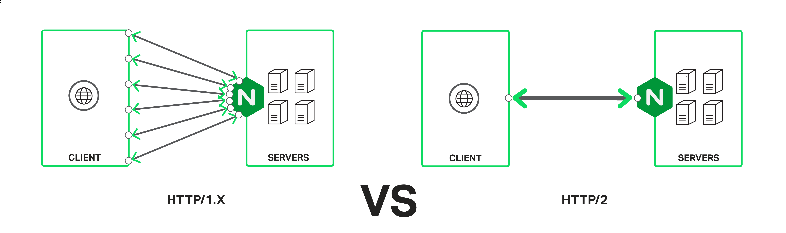
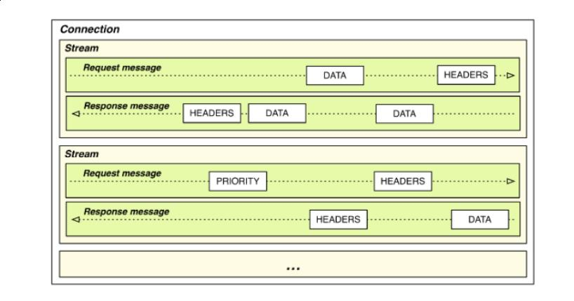

HTTP2 简介
本文是NGINX HTTP2 White Paper 、 http2-module-nginx、 tips for faster http2 的阅读笔记，主要介绍HTTP2的特性，实现现状，如何从HTTP1.x升级到HTTP2。
1 HTTP/1.x 现状
自1990年出现HTTP，一个TCP连接一次只能处理一个HTTP请求，TCP连接无法重用。当时一个WEB页面对应的资源比较单一，随着一个页面对应的资源的增多（图片，JS）等，HTTP愈发不能满足需求。为了减少页面加载时间，WEB浏览器通常会一次创建多个连接。
1999年引入了HTTP/1.1，主要解决TCP连接无法重用的问题，即KeepAlive。即使TCP连接可以重用，HTTP仍然是请求应答式的，一个请求没完成前，是不会开始下一个请求的。尤其是HTTPS连接需要更多的交互才能建立。
为了优化HTTP/1.1，开发者想出了很多招。
- 域名共享。因为针对同一个域名，WEB浏览器最多打开6个连接。为了增加并发，通常会使用域名共享，同一资源可以用多个域名访问。
- 图片合并。多个图片合并成一个图片，尤其在CSS中，减少请求个数。
- 合并代码文件。通过合并JS，CSS文件，减少请求个数。
- 内联文件。通过把JS、CSS直接写到HTML文件中，减少请求个数。
其实，图片也可以内联到HTML文件中。这个优化在HTTPS中得到应用。GOOGLE的搜索结果，图片都是内联到HTML页面中的，没有单独的图片请求。所有这些优化，都落到了一处， 减少请求个数 ，HTTP2的改进也是主要针对这点。
2 HTTP/2 的改进
HTTP/2并没有改变HTTP/1.1的语义，包括HTTP协议的格式，状态码，HEADER的定义等。主要改进的是HTTP的交互方式。
- 单一持久连接。一个网页，只有一个TCP连接。
- 多路。所有的HTTP请求都通过这个连接发送。没必要等上一个HTTP请求结束，就可以发送下一个，这个也叫PIPELINE。
- Header压缩和二进制编码。压缩使用HPACK算法。
- 优先级。因为是多路请求，为了解决依赖关系，不同等级的请求有不同的优先级。
HTTP/2 还规定了服务器PUSH，但是nginx还没有实现这点。
从下图可以看出HTTP/1.x和HTTP/2的主要区别。

从下图可以形象的看出HTTP2是如何发送HTTP请求的。

3 HTTP/2 和 HTTPS
这两者本来没有任何关系，但是现在主流浏览器只有在HTTPS时才启用HTTP2，所以为了使用HTTP2，服务端只能配置成HTTPS模式的。主要还是HTTPS的连接更昂贵，在HTTPS上启用HTTP/2收益更大。
3.1 HTTPS 连接昂贵的两个原因
- 连接时服务端需要更多的CPU，私钥机密对称密钥
- 建立SSL/TLS连接需要额外的三次握手，容易放大RTT的影响
4 性能
- 在RTT小于20ms时，HTTP/1.x 和 HTTP/2差别不大
- RTT在30ms和250ms之间时，HTTP/2小胜
- RTT大于250ms时，HTTP/1.x有优势
大文件没有用HTTP/2的必要。这是NGINX公司的测试，你可能需要构建自己的测试用例。
5 HTTP/2的影响
- 所有HTTP/1.x的优化可以去掉了，这些优化反而会妨碍HTTP/2的性能
- 还没采用HTTPS的网站，为了尽快使用HTTP/2，又多了一条使用HTTPS的理由
- HTTP服务器的并发压力会降低很多倍
- 二进制HEADER，带来了调试困难
- NGINX的upstream并不支持HTTP/2，因为KEEPALIVE和RTT很小
- HTTP库例如libcurl何时支持HTTP/2，以及如何才是最佳实践还有待研究